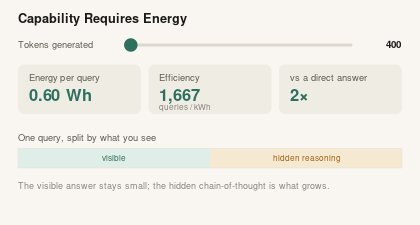
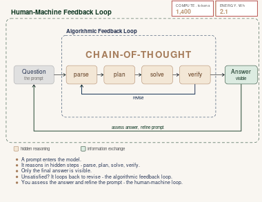
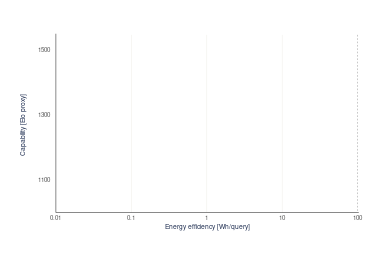

Visual Explainers
Interactive infographics and visual explainers — distilling complex questions in AI, energy, quantum computing, and complex systems into something you can explore for yourself.
Latest

Interactive#AI · #Energy · #Compute
How per-query energy scales with the number of tokens a model generates — and why reasoning models' hidden chain-of-thought can cost many times a direct answer. Drag the slider and see where real models land on a log scale.
Open Infographic
Animated#AI · #Reasoning · #Energy
Reasoning models think in a hidden loop, wrapped in a loop with you — and every revise pass makes the compute and energy compound.
Open Infographic
Animated#AI · #Capability · #Energy
Capability rises with the energy each query burns — see where direct answers, retrieval and reasoning land, and who spans all three.
Open Infographic